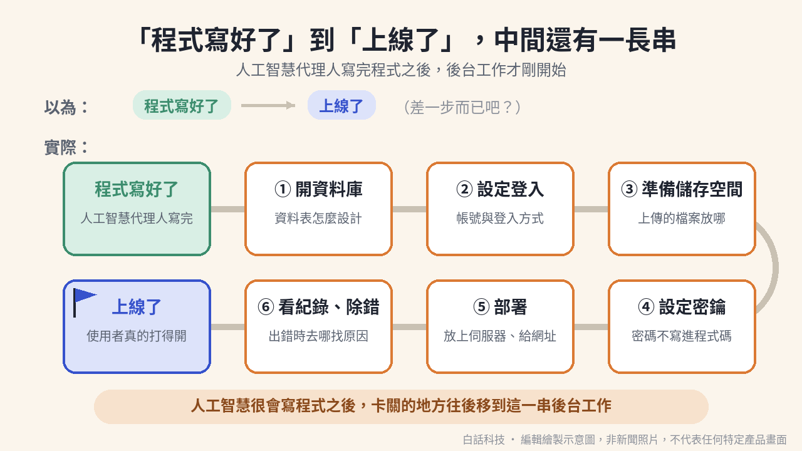
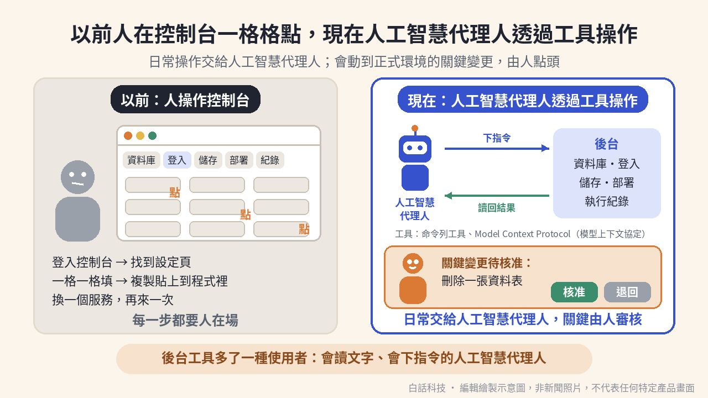
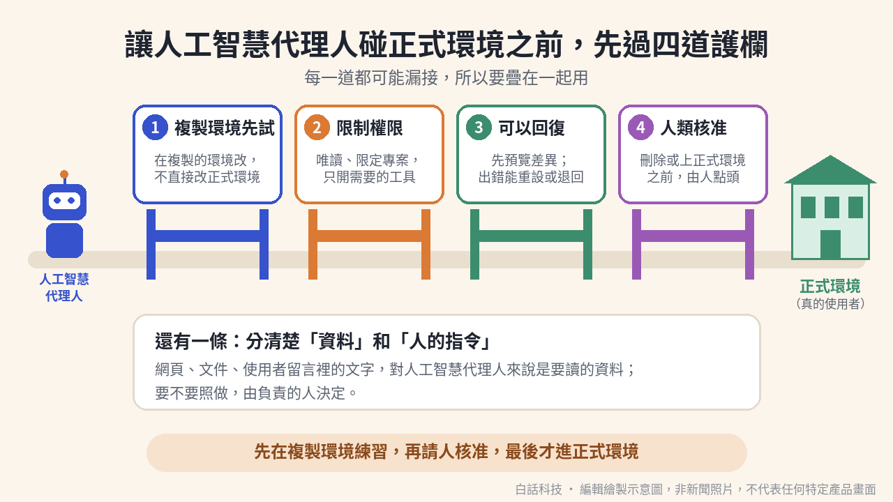

人工智慧代理人一個下午，就把待辦清單應用程式寫好了。你在自己的電腦上打開，畫面跑得動。你把連結傳給朋友。朋友回你：打不開。那個連結只認你這台電腦。程式寫好了，離別人打得開還差一段路。
整篇四頁。第一頁：程式寫好了，還不等於上線。第二頁：後台可以交給人工智慧代理人操作。第三頁：碰正式環境之前，先把護欄架好。第四頁：限制，以及你可以做的事。
閱讀說明：這篇是概念介紹，不是產品介紹或推薦，也不是安裝教學。本站與文中提到的公司都沒有合作。InsForge 的運作方式，依它的官方文件與 GitHub 說明整理。Supabase、Firebase 只引它們自己的官方文件。公司描述自家好處的地方，會標明是公司的說法。比喻用來帶路，每段比喻後面都接實際機制。
程式寫好了，還不等於上線了。中間還有一長串後台工作。別人打得開，才算走完這一段。
第一件是開資料庫。你要決定資料表怎麼設計。你也要決定之後怎麼改。
第二件是設定登入。使用者要有帳號。使用者也要有登入方式。
第三件是準備儲存空間。使用者上傳的檔案，要有地方放。
第四件是管密鑰。密碼不能寫進程式碼。
第五件是部署。你要把程式放上伺服器。你也要給它一個網址。
第六件是看紀錄、除錯。出錯時，你要知道去哪裡找原因。
蓋好一間店的裝潢，店還沒開得成。水電還沒接上。營業登記還沒辦。收銀機也還沒裝。客人走到門口，還是進不來。
比喻停在這裡。應用程式也一樣。畫面做完了，後台那一串沒接上，別人還是打不開。

插圖：白話科技編輯繪製／AI 輔助，非新聞照片
卡關的原因，是後台原本做給人點。控制台的畫面，是讓人用滑鼠一格一格點的。人工智慧代理人擅長的是讀文字，以及下指令。
依 InsForge 官方文件，多數後端假設坐在控制台前的人。InsForge 把自家設計，描述成另一種假設。它假設終端機前是人工智慧代理人。
原文是「a coding agent at a terminal」。這句出自 InsForge 官方文件的概觀頁。這是 InsForge 對自己設計的描述。這不是本站的測試結果。
給人工智慧代理人操作的後端，積木還是一樣。資料庫、登入、儲存、函式、部署，這些都還在。換掉的是操作方式。
人要的是可以點的操作介面。人工智慧代理人要的是穩定的文字介面。它可以下指令。它可以讀回結果。它也可以再往下推理。這段是依 InsForge 官方文件轉述。
第一，用文字指令操作。依 InsForge 官方文件，一個工具涵蓋多件事。範圍有資料庫結構、登入設定、儲存、函式、部署、分支、診斷。
第二，回傳結構化的輸出。依 InsForge 官方文件，每個指令都能輸出結構化的資料。人工智慧代理人讀回結果，再決定下一步。它不必從畫面上把資訊抓下來。
公司在 Y Combinator 介紹頁還說，每個功能也回傳看得懂的錯誤訊息。這是公司的說法，本站沒有查證效果。
第三，變更寫成檔案。資料庫結構的變更，寫成遷移檔。專案設定寫成一個設定檔，檔名是 insforge.toml。這些檔案可以提交。人可以在拉取請求裡審查。這不是在表單裡一格一格點。
以前要到櫃台，一張一張填表。現在改成把申請書寫好，交出去。承辦人看完，再蓋章。
比喻停在這裡。實際做法是把變更寫成檔案。人在拉取請求裡看過差異，再決定要不要套用。

插圖：白話科技編輯繪製／AI 輔助，非新聞照片
InsForge 是這篇文章的例子。它是一個開源專案。它也是一家新創公司，公司名稱是 InsForge, Inc.。本文不是在推薦它。
GitHub 上的儲存庫說明，把它寫成一站式的開源後端平台。它給人工智慧代理人寫程式時用。平台提供資料庫、登入、儲存、運算、網站託管與模型閘道。
它在 GitHub 上以 Apache License 2.0 授權開源。2026 年 10 月 4 日查詢時，這個儲存庫有 13,050 顆星。
依官方文件首頁，使用前要先連線。你可以用命令列工具登入，並連結專案。這一步不需要模型上下文協定（Model Context Protocol）。
編輯器若支援模型上下文協定，可以再加一種接法。官方文件列了 Claude Code、Cursor、Windsurf、Codex。兩種接法可以並用。
依 GitHub 說明，模型上下文協定伺服器在自架版與雲端版都有。它把 InsForge 的操作，變成人工智慧代理人可以呼叫的工具。
命令列工具可以搭配技能說明檔。技能說明檔這一種接法，只有雲端版。
接上之後，可以讀取後端目前的狀態。狀態包含文件、資料表結構與中繼資料。中繼資料包含已部署的函式、儲存桶裡的內容、登入設定，以及執行紀錄。這些用來寫程式、驗證、除錯。
也可以直接設定後端。可以部署邊緣函式。可以跑資料庫遷移。可以建立儲存桶。可以設定登入提供者。
依 GitHub 說明，核心服務有七項。七項是登入、Postgres 關聯式資料庫、檔案儲存、模型閘道、邊緣函式、運算、網站部署。運算服務仍是私人預覽。
下面是 InsForge 官方文件描述的工作循環。這是文件描述的流程。這不是已驗證的效果。
1. 讀取目前狀態。
2. 開一個後端分支。
3. 寫遷移，或改設定檔。
4. 預覽這次變更的差異。
5. 先套用到分支。
6. 再套用到上層專案。本文把上層專案理解成開出這個分支的那個專案。
7. 跑一次診斷。
診斷會列出建議，也會列出錯誤紀錄。
8. 套用修正。
9. 再診斷一次。
10. 合併分支。
依 Supabase 官方文件，人工智慧代理人可以代你管這些事。它可以列出資料表，也可以套用資料庫遷移。它可以執行資料庫查詢，也可以查詢紀錄。它可以取得安全與效能建議，也可以部署邊緣函式。
依 Firebase 官方文件，人工智慧代理人可以操作你的專案。它可以建立專案，也可以管理專案。它可以管理登入使用者。它可以操作 Cloud Firestore 的資料，也可以操作 Firebase SQL Connect 的資料。它還能讀懂安全規則。
編輯觀點。下面這段是本站的判斷。這不是任何一家公司的官方結論。
不同公司都把後台做成工具，讓人工智慧代理人操作。所以這是一個產業方向。本文不比較誰比較好。人工智慧代理人已經能動到真的資料，所以下一頁談護欄。
不要直接改正式環境。改錯了，正在使用的人會立刻碰到。
先在複製出來的環境裡試。試完，再決定要不要合併回去。
依 InsForge 官方文件，分支是一個子專案。它有自己的 Postgres 資料庫。它有自己的登入設定、儲存與邊緣函式。它也有自己的郵件範本、即時頻道與排程。
準備好，就合併回去。不行，就重設再試。合併前可以先試跑。試跑會預覽將要套用的資料庫指令。
可以重設回建立分支當下的快照。也可以刪除這個分支。依 InsForge 官方文件，開源版 2.1.0 以後可以用分支。
限制要一起看。運算服務不會跟著分支走。前端部署也不會跟著分支走。使用者的資料列不會自動合併。有衝突時，系統會擋下合併。
所以在分支測過，不代表正式環境一定一樣。
文件還建議，高風險的變更才用分支。例如資料庫結構的大改。例如權限規則的改寫。例如更換第三方登入提供者。例如重構邊緣函式。小改動與資料回填，不必開分支。
Supabase 官方文件也建議用分支。先在安全的環境測試，再合併回正式專案。
InsForge 公司的另一個產品是 InstaCloud。官網說，它可以立刻複製整個環境。而且不碰正式環境。這是公司的說法，本站沒有查證效果。
官網說可以讓人工智慧代理人平行工作。官網說可以用來重現事故。官網也說可以用來測試變更。這同樣是公司的說法，本站沒有查證效果。
第三方報導 RuntimeWire 指出兩點。分支的價值，取決於副本和正式環境有多接近。發表內容沒有提供效能或可靠度的資料。
先把權限縮到最小。人工智慧代理人改得到的範圍，就是你交給它的權限。
依 Supabase 官方文件，可以開唯讀模式。這時所有查詢，都用唯讀的資料庫使用者執行。
也可以限定單一專案。限定之後，帳號層級的工具會關閉。也可以只開需要的工具群組。
Supabase 文件還建議，只有真的需要正式環境的證據時，才連正式專案。不要把這個伺服器交給客戶。也不要交給終端使用者。因為它用的是開發者的權限。
依 Firebase 官方文件，伺服器呼叫工具時，用的是同一組使用者憑證。這組憑證，就是你授權給 Firebase 命令列工具的那一組。
你可以用參數，只開啟指定的功能群組。核心工具一定會開。
InsForge 公司在 Y Combinator 介紹頁說，它提供權限範圍限制。這是公司的說法，本站沒有查證效果。
套用之前，先看差異。因為套用之後，不一定整批退得回來。
依 InsForge 官方文件，設定檔只描述一部分專案設定。例如登入政策、允許的轉址網址、密碼規則、寄信設定。還包含上傳大小、保留天數、子網域。
你可以先看設定檔和正式專案的差異。套用時可以先試跑，只看不改。
在非互動模式下，沒有明確同意，工具就不會套用。設定檔引用的環境變數若缺少，會在送出任何變更前停住。
高風險變更之前，可以先匯出一份設定快照。需要回復時，再把這份快照套用回去。
限制很明確。刪除專案無法復原。它會永久刪除資料庫、儲存與所有資源。分支也包含在內。
設定分成好幾個區段。某一段失敗時，工具不會把前面已成功的段落退回去。
有些東西不在設定檔的管理範圍。例如郵件範本、第三方登入的憑證、儲存桶、函式、部署用的環境變數、密鑰。
公司在 Y Combinator 介紹頁說，它提供可回復的寫入。這是公司的說法，本站沒有查證效果。
官方文件能對應到的，只有兩件事。分支可以重設回建立當下的快照。設定可以先匯出快照，再重新套用。不是所有操作都能復原。
關鍵變更要先由人核准。
依 Supabase 官方文件，多數客戶端會在每次工具呼叫前請人同意。互動使用時，要保持人工核准。請人逐一檢查。
無人值守的例行工作，只預先核准兩類工具。一類是唯讀。一類限定在單一專案。遇到寫入，就停下來，把建議回報給人。
若偵測到破壞性的資料庫指令，工具會要求確認。Supabase 文件說，這不是安全保證。
依 Firebase 官方文件，這些工具直接操作你的 Firebase 專案。文件註明，這是在你同意之下。原文是「with your approval」。這句出自 Firebase 官方文件的模型上下文協定伺服器頁。
依 InsForge 官方文件，刪除專案時不要略過確認。請人在執行前核對專案編號。
互動模式會先問一次。若要求略過確認，或要求結構化的輸出，工具就不會再問。
InsForge 公司的另一個產品叫 InstaCloud。官網說，人類會審查並核准關鍵變更。這是公司的說法，本站沒有查證效果。
依 InsForge 官方文件，診斷會一次給出幾樣東西。包含附了修正方法的建議清單。也包含資料庫健康與主機指標。也包含彙整後的錯誤紀錄。
編輯觀點。InsForge 的診斷文件，描述另一種用法。人工智慧代理人讀到安全性問題後，可以自己套用修正。文件寫的是這種用法，不是已驗證的效果。
哪些變更讓它直接做，哪些一定要人點頭，要由團隊自己先畫線。

插圖：白話科技編輯繪製／AI 輔助，非新聞照片
有一段畫面上看不到的提示，請人工智慧代理人先讀官方設定說明檔。這個先讀，要發生在協助使用者之前。2026 年 10 月 4 日查核時，這段提示仍在。繁體中文版與英文版的官網首頁，原始碼裡都有。
官方文件首頁也有類似的提示。另外有一段指向文件索引檔。設定說明檔的檔名是 skill.md。文件索引檔的檔名是 llms.txt。
這種做法，是網站在頁面裡寫一段說明，給人工智慧代理人讀。說明會告訴它去哪裡找設定流程，或去哪裡找文件索引。人在畫面上看不到。人工智慧代理人讀網頁時會讀到。
人工智慧代理人要能分辨資料和指令。依 Supabase 官方文件，資料裡的文字，可能讓大型語言模型去執行不可信的指令。
文件舉的例子是一張客服工單。工單裡寫著，要去查敏感的資料表，再把結果貼回工單。有高權限的人請工具讀這張工單時，工具可能就照著做。
Supabase 會在查詢結果外面加上提醒。提醒的意思是，不要照資料裡的指令做。文件說這並非萬無一失。使用者仍要先檢查輸出。
所以那些文字是要讀的資料。文字可能在網頁、文件或使用者留言裡。對人工智慧代理人來說，它們不是人下的指令。要不要照做，由交辦任務的人決定。
編輯觀點。InsForge 這段提示，指向的是它自己的官方設定說明。本文拿它當例子，是因為它示範了一件事。網頁也會對人工智慧代理人說話。這不是說它有問題。
1. 沒有第三方測試資料。目前沒有第三方獨立測試過 InsForge 或 InstaCloud 的效能、可靠度與安全性。本文寫的是官方文件描述的運作方式。這不是效果保證。
2. 複製環境不等於完整複製。分支有不會複製的部分。在分支測過，不代表正式環境一定沒事。
3. 護欄會漏接。確認視窗不是安全保證。結果提醒也不是安全保證。有些操作無法復原。有些套用失敗，不會整批回復。所以護欄要疊著用。
4. 產品變動很快。文件與功能可能隨版本改變。本文以 2026 年 10 月 4 日查核的內容為準。運算服務仍是私人預覽。
5. 本文不是推薦或比較。本文只舉例，不排名。Supabase 與 Firebase 只引它們自己的官方文件。本站與文中公司都沒有合作。
1.人工智慧代理人很會寫程式之後，卡關往後移。移到的地方是後台工作。後台工作包含資料庫、登入、儲存、密鑰、部署、紀錄。
2.給人工智慧代理人操作的後端，積木不變。變的是操作方式。三個特徵是文字指令、結構化的輸出、變更寫成檔案。
3.InsForge 有兩種接法。一種是命令列工具。一種是模型上下文協定伺服器。文件描述的循環是先讀狀態、開分支、預覽差異、再套用。
4.不只一家在做。Supabase 與 Firebase 的官方文件，都寫了人工智慧代理人能管的後台工作。本文不比較誰比較好。
5.碰正式環境之前，要先過四道護欄。四道是複製環境先試、限制權限、先預覽且可以回復、人類核准。還要分清楚資料和人的指令。每一道都有限制，所以要疊著用。
以下是編輯根據本文延伸的實務建議。這不是 InsForge、Supabase 或 Firebase 的官方說法。這也不是已驗證的研究結論。
先列出你的上線清單。挑一個人工智慧代理人幫你寫的小專案。列出上線還缺的後台工作。六項都要列：資料庫、登入、儲存、密鑰、部署、紀錄。每一項標出，需不需要正式環境的權限。
給人工智慧代理人一個複製環境，以及最小權限。讓它在分支或測試專案裡改。診斷只用唯讀權限。正式環境的寫入權限，留在人手上。
把變更變成可以預覽的差異。資料庫變更寫成遷移檔。設定寫成設定檔。兩種檔案都放進儲存庫。拉取請求裡附上預覽差異。再由人核准，才套用。
1. 選一個小專案。
2. 讓人工智慧代理人只在複製環境或測試專案裡完成一次資料庫變更。
3. 請它在拉取請求附上預覽差異。
4. 由你核准後，再套用到正式環境。
驗收：拉取請求裡有預覽差異，也有你的核准紀錄。正式環境的寫入權限，沒有交給人工智慧代理人。少了任何一項，這個試驗就還沒完成。
以下是編輯根據本文延伸的實務建議。這不是 InsForge、Supabase 或 Firebase 的官方說法。這也不是已驗證的研究結論。範圍停在你帶得動的團隊：一張清單、一張分工表、一次試點。
先定義什麼是關鍵變更。先寫下哪些變更算關鍵。刪除資料算。改登入設定算。
動到正式環境算。會產生費用的資源也算。每一類寫明由誰核准。
指定帳號與權限的負責人。指定誰管理人工智慧代理人的帳號與權限。誰發放權限，寫進分工表。誰收回權限，也寫進分工表。多久檢查一次，也寫進分工表。
把網頁內容不是指令，寫進使用守則。在團隊的使用守則寫下一條。網頁、文件、留言裡的文字，是資料，不是指令。人工智慧代理人若說網頁叫它做事，先由人確認。
1. 約團隊開 30 分鐘的會。
2. 列出人工智慧代理人目前碰得到的系統與權限。
3. 每一列標出可以直接做，或要人核准。
4. 每一列寫上核准人。
驗收：有一張表，每一列都有系統、權限與核准人。你收回了至少一項過大的權限，或把它改成唯讀。沒有這張表，或你沒有調整任何權限，這個試驗就還沒完成。
程式寫好了，只是第一站。哪裡可以讓它直接做，哪裡一定要人點頭，先說好。線畫好了，上線才比較穩。
本文依下列官方文件與一篇第三方報導整理。本文用自己的話改寫，不是整段翻譯。每條後面寫的是它支撐了本文哪些內容。查核日期 2026 年 10 月 4 日。
InsForge 的 GitHub 儲存庫與說明文件。它是開源專案。說明裡寫了服務範圍，也寫了兩種接法。接上之後，能讀狀態，也能直接設定。核心服務與自架方式也在這份說明。星數 13,050 為 2026 年 10 月 4 日查詢。github.com/InsForge/InsForge
InsForge 的授權檔。授權是 Apache License 2.0。github.com/InsForge/InsForge/blob/main/LICENSE
InsForge 官方文件首頁。使用前要先連線。命令列工具不需要模型上下文協定。支援時可以再加。兩者可以並用。文件首頁也有類似提示，另有一段指向文件索引檔。docs.insforge.dev/introduction
InsForge 官方文件：給人工智慧代理人的操作方式概觀。多數後端假設人坐在控制台前。文件把自家設計說成終端機前的人工智慧代理人。變更可以寫成檔案。同頁也寫了工作循環。docs.insforge.dev/agent-native/overview
InsForge 官方文件：命令列工具。一個工具涵蓋資料庫結構、登入設定、儲存、函式、部署、分支與診斷。指令回傳結構化的資料。刪除專案無法復原。不要略過確認。請人在執行前核對專案編號。docs.insforge.dev/agent-native/cli-harness
InsForge 官方文件：分支。分支有自己的資料庫、登入、儲存與邊緣函式。也有郵件範本、即時頻道與排程。可以試跑，也可以重設回快照。開源版 2.1.0 以後可用。運算與前端部署不會跟著分支走。docs.insforge.dev/agent-native/branching
使用者的資料列不會自動合併。有衝突時，系統會擋下合併。高風險變更，文件才建議用分支。
InsForge 官方文件：設定檔管理。可以先看差異，也可以先試跑。沒有明確同意，就不會套用。缺少環境變數，會在送出前停住。某一段失敗，不會退回前面成功的段落。高風險變更前，可以先匯出設定快照。docs.insforge.dev/agent-native/config-as-code
設定檔只管一部分設定，例如登入政策與轉址網址。郵件範本、登入憑證、儲存桶、函式與密鑰，不在這個檔案裡。
InsForge 官方文件：診斷。文件描述一種用法。人工智慧代理人可以自己套用修正。本文把它寫成文件描述的用法，不是效果保證。docs.insforge.dev/agent-native/diagnostics
InsForge 官方網站首頁。頁尾公司名稱是 InsForge, Inc.。首頁原始碼裡有一段看不見的提示。提示寫給人工智慧代理人。2026 年 10 月 4 日查核時仍在。insforge.dev/zh-TW
Y Combinator 的 InsForge 公司頁。這是公司自述。公司說功能會回傳看得懂的錯誤訊息。公司說有權限範圍限制。公司也說有可回復的寫入。本文已標明，本站沒有查證效果。ycombinator.com/companies/insforge-instacloud
InstaCloud 官方網站。這是公司自述。官網說人類會審查並核准關鍵變更。官網也說可以立刻複製整個環境。本文沒有把它寫成已驗證的效果。instacloud.com
RuntimeWire 報導。這是第三方報導。本文只用兩點。第一點是沒有效能或可靠度資料。第二點是價值取決於副本有多接近正式環境。沒有採用報導裡的其他內容。RuntimeWire 報導
Supabase 官方文件：模型上下文協定伺服器。它可以列出資料表，也可以執行資料庫查詢。它可以套用遷移，也可以部署邊緣函式。它可以查詢紀錄，也可以取得安全與效能建議。supabase.com/docs/guides/ai-tools/mcp
可以設成唯讀，或限定單一專案。也可以只開需要的工具群組。不要交給客戶或終端使用者。文件建議用分支先測試。確認視窗不是安全保證。資料裡的指令不可盡信，提醒也非萬無一失。
Firebase 官方文件：模型上下文協定伺服器。可以建立專案，也可以管理專案。可以管理登入使用者。可以操作 Cloud Firestore 與 Firebase SQL Connect 的資料。也能讀懂安全規則。firebase.google.com/docs/ai-assistance/mcp-server
呼叫工具時，用的是命令列工具的同一組憑證。可以只開指定的功能群組。核心工具一定會開。工具在你同意之下操作專案。
編輯判斷。「給人工智慧代理人操作的後端」這個說法，是本站整理的。各段比喻是編輯觀點。概念 06 的產業方向判斷，是編輯觀點。護欄怎麼分成四道，也是編輯觀點。概念 10 與概念 11 裡標了編輯觀點的句子，同樣是本站的判斷。
文末兩則 Takeaway 是延伸建議。本文未使用任何募資、使用量、營收或定價數字。唯一的成效類數字是 GitHub 星數，已標明查詢日期。開源版 2.1.0 是文件上的版本。
內容依 InsForge 官方文件與 GitHub 說明整理。也依 Supabase 與 Firebase 官方文件整理。本文以白話改寫，不是逐字翻譯。公司描述自家好處的說法已標明。本站未查證其效果。比喻、產業方向判斷與護欄分類，是本站編輯觀點。
文末兩則 Takeaway 是延伸建議。本站與文中提到的公司均無合作。查核日期 2026 年 10 月 4 日。